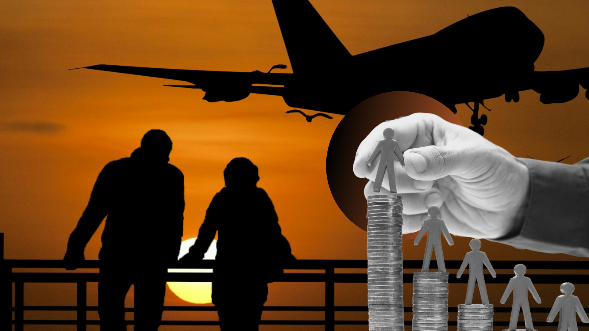

Pagkawala ng Magulang sa Konteksto ng Pamilya ng mga OFW
Alyssa Nicole Aguado, Dhea Gardiola, Krizel Glorioso, Francheska Laguerta, Jaren Orig & John Lenon Plata
Huling binago: 2025
May mga batang lumaking matatag at matibay, hindi dahil nais nila, kundi dahil kinakailangan. Ang mga anak ng mga Overseas Filipino Worker (OFW) ay kabilang sa mga batang kailangang matutong tumayo sa sariling mga paa; natututo silang umasa sa sarili. Maraming magulang ang pinipiling magtrabaho sa ibang bansa upang matustusan ang pangangailangan ng kanilang pamilya, lalo na ng kanilang mga anak. Ngunit kapalit nito ang iba’t ibang hamong kinakaharap ng mga bata—sa akademiko, pakikisalamuha, at emosyonal na aspeto. Bagaman naroroon ang pagmamahal ng mga magulang, hindi kailanman magiging madali ang kanilang sitwasyon, sapagkat iba pa rin ang pagdamay na malayo kaysa sa presensiyang nararamdaman. Ang platapormang ito ay inilaan para sa mga batang naiiwan; magsisilbi itong kanilang tinig upang maibahagi ang kanilang karanasan at mga kuwento.
Sino ang mga Overseas Filipino Workers (OFWs)?
Ang Overseas Filipino Workers (OFWs) ay mga Pilipinong nagtatrabaho at naninirahan sa ibang bansa sa loob ng itinakdang panahon, kadalasan ay ayon sa kontratang kanilang pinasukan. Maraming pamilya, lalo na ang mga magulang, ang pinipiling mangibang-bansa upang matustusan ang pangangailangan ng kanilang mga anak at masiguro ang kanilang kinabukasan, lalo na sa harap ng kahirapan. Sa kasalukuyan, kinikilala ang Pilipinas bilang isa sa mga bansang may pinakamaraming manggagawa sa ibang bansa.
Kinikilala ang sipag at sakripisyo ng mga OFW, at ang kanilang mga karanasan ay nagsisilbing inspirasyon sa marami. Araw-araw nilang hinaharap ang mga hamon ng pakikisama sa ibang kultura at ang mabigat na lungkot ng pagkawalay sa kanilang pamilya. Ngunit hindi lamang sila ang dumaranas ng pagsubok, maging ang kanilang mga pamilya, lalo na ang kanilang mga anak, ay lubos ding naaapektuhan sa kanilang pagkawala.
Pagkawala ng Magulang Dahil sa Pagtatrabaho sa Ibaang Bansa”
Mahalaga ang ginagampanang papel ng mga magulang sa paghubog ng pisikal at emosyonal na paglaki ng kanilang mga anak. Nagsisimula ang pisikal at mental na pag-unlad sa pagkabata—isang yugto na nangangailangan ng paggabay at suporta mula sa mga magulang. Gayunpaman, sa Pilipinas, tinatayang 18% ng mga bata ay naninirahan lamang kasama ang kanilang mga ina, 4% ay kasama lamang ang kanilang mga ama, at 7% naman ay pinalalaki ng kanilang mga lolo’t lola.
Kadalasang dahilan ng pagkawala ng mga magulang ay ang paghihiwalay, pagkamatay ng isa sa kanila, at ang pangingibang-bansa upang magtrabaho. Sa Pilipinas, maraming magulang ang pinipiling humanap ng mas magandang oportunidad sa ibang bansa kaysa manatili kasama ang kanilang pamilya. Bagama’t nakatutulong ito upang matugunan ang pangangailangang pinansyal, madalas nitong naiiwan ang mga anak—sila ang higit na naaapektuhan at dumaranas ng mabibigat na emosyonal at sosyal na epekto.
Ang pagkawala ng magulang ay maaaring magdulot ng negatibong epekto sa kabuuang kalagayan at pag-unlad ng bata, kabilang na ang kanilang kakayahan sa paggawa ng desisyon, pag-uugali, at paraan ng pagharap sa mga suliranin. Kung walang wastong paggabay mula sa magulang, mas mataas ang posibilidad na ang mga bata ay malulong sa alak, magpakita ng mababang pagganap sa paaralan, at masangkot sa mapanganib na gawain. Madalas lumalabas ang mga epektong ito bilang mga hamon sa kanilang akademiko, sosyal, at emosyonal na aspeto ng buhay.
Tatalong Karaniwang Hamon na Kinakaharap ng Anak ng mga OFW
Akademikong Pagganap
Ang mga nakamit ng mag-aaral na nakuha mula sa kanilang paaralan ay karaniwang sinusukat sa pamamagitan ng pagganap sa silid-aralan at mga pagsusulit. Dagdag pa rito, ang pang-akademikong pagganap ay ang katawagan na tumutukoy sa mga nakamit ng isang mag-aaral matapos makumpleto ang isang asignatura o kurso sa isang institusyon. Ito ay ginagamit upang malaman ang antas ng pagkatuto ng mga mag-aaral, na pangunahing nakukuha mula sa kanilang mga naipasa na pagtatasa sa formative at summative.
-
Kahirapan sa konsentrasyon at pokus
Ang mga mag-aaral na may magulang na nagtatrabaho sa ibang bansa ay nakararanas ng kahirapan sa konsentrasyon at pokus. Nahihirapan silang magpokus sa kanilang pag-aaral at nawawalan ng motibasyon na tapusin ang mga gawain sa paaralan. Kapag kulang ang paggabay ng magulang, nagiging mahirap para sa kanila ang magtuon ng pansin, na nagdudulot ng kawalan ng atensyon, kalungkutan mula sa pananabik sa kanilang mga magulang, at pagbaba ng motibasyon. Sa kalaunan, ang kakulangan ng suporta ay nagiging hamon sa kanilang pag-unlad sa pag-aaral. Ang pagkawala ng isang OFW na magulang ay negatibong nakaaapekto sa pokus, interes, at pangkalahatang pagganap ng mag-aaral.
Gaya ng ipinaliwanag nina Annor et al. (2024), maraming dahilan para sa pagkawala ng magulang, tulad ng pagkamatay, diborsyo, pag-abandona, o migrasyon. Ang pagkawala ng isa o parehong magulang ay may katulad na epekto sa mga bata, kahit ano pa ang dahilan. Dagdag pa rito, binigyang-diin ni Mwai (2018) na ang mga matatanda na nakaranas ng emosyonal na pagkawala ng magulang noong kanilang kabataan ay madalas nagdadala ng matinding kalungkutan at damdamin ng kawalan. Kahit na ang mga magulang na nagtatrabaho sa ibang bansa ay nakapagbibigay ng mas maayos na katatagan sa pananalapi, ang kanilang mga anak ay nakararanas ng emosyonal na epekto ng pagkakawalay, tulad ng kalungkutan, kakulangan, at damdamin ng pagiging iniwan. Ang mga epektong ito ay nakaaapekto hindi lamang sa kanilang kagalingan kundi pati na rin sa kanilang mga desisyon, asal, at paraan ng pagharap sa suliranin. Higit pa rito, ang limitadong komunikasyon at kawalan ng kakayahang lubos na maipahayag ang damdamin ay madalas nagdudulot ng puwang sa ugnayan ng bata at ng magulang.
-
Kakulangan ng paggabay sa gawaing pampaaralan
Ang kakulangan ng tulong mula sa magulang ay nagpapahirap sa mga mag-aaral na pamahalaan ang kanilang oras at tapusin ang mga gawaing pampaaralan. Kapag walang paalala mula sa magulang, kailangan nilang umasa sa sariling disiplina at motibasyon upang matapos ang mga gawain at maabot ang mga takdang araw. Nahihirapan ang mga mag-aaral na mag-aral dahil sa kakulangan ng paggabay at presensya ng magulang, na nakaaapekto sa kanilang motibasyon at pamamahala ng oras. Nahihirapan din sila sa mga takdang-aralin at proyekto dahil sa kakulangan ng oras at pokus, na nagpapakita kung paano ang pagkawala ng suporta ng magulang ay nagpapahirap sa kanila na mapangasiwaan ang gawaing pampaaralan. Ang kakulangan ng paggabay ng magulang ay nagiging sanhi upang makaranas sila ng iba’t ibang hamong pang-akademiko.
Ayon kay Zhang (2021), ang kakulangan ng paggabay ng magulang ay may negatibong epekto sa mga bata, partikular na sa kanilang indibidwal na pag-unlad. Ang materyal na suporta lamang ay hindi sapat kapalit ng pagkawala ng magulang, dahil madalas nakararamdam ang mga bata ng kapabayaan, na maaaring makaapekto sa kanilang sikolohikal na paglago at humantong pa sa suliraning kognitibo. Ang mga anak ng mga OFW ay may tendensiyang makakuha ng mababang marka sa paaralan dahil sa kakulangan ng konsentrasyon sa silid-aralan.Higit pa rito, binigyang-diin nina Mao, Zang, at Zhang (2020) na ang pangmatagalang pagkawala ng magulang ay nakapag-aambag sa mga suliraning emosyonal at pag-uugali, na maaaring magresulta sa mababang pagganap sa akademiko. Kapag walang magulang na tumutulong sa kanila sa mga takdang-aralin o proyekto, maraming bata ang nakararanas ng kalungkutan at pananabik, na nagpapahirap sa kanila na mahusay na gumanap sa paaralan.
Sosyalisasyon
Ang terminong ito ay ginagamit upang ilarawan kung paano nakikipag-ugnayan ang mga tao sa lipunan. Kabilang sa sosyalisisasyon ang proseso ng pagkatuto at pagtuturo, pagkuha ng kaalaman at kasanayan mula sa lipunan, at pagbabahagi ng kaalaman sa iba. Dagdag pa rito, ang sosyalisisasyon ay ang proseso kung saan natututo ang isang tao ng iba’t ibang pag-uugali, pamantayan, at pagpapahalaga sa pamamagitan ng mga kaibigan o ibang tao. Maaaring ito’y sa pamamagitan ng mga gawain o simpleng pakikipag-usap sa isa’t isa.
-
Takot na maabandona
Madalas maranasan ng anak na may magulang na OFW ang takot na sila ay maiwan o mapabayaan. Kanilang ibinahagi na kapag sila ay nagsisimulang mapalapit sa isang tao, nag-uumpisa rin silang matakot na baka iwanan sila. Ang pamumuhay na may patuloy na pangamba na baka iwanan sila ng mga tao ay nagiging hadlang upang sila ay makabuo ng matatag at pangmatagalang ugnayan. Ang isyung ito ay nakaaapekto sa kanilang kakayahang magtatag at mapanatili ang mga relasyon.
Ayon kina Gaspan at Sansot (2024), maaaring makaranas ng iba’t ibang emosyon nang sabay-sabay ang mga anak na naiwan ng kanilang mga magulang, ito ay maaaring magkaroon ng negatibo epekto sa kanilang pisikal at emosyonal na pag-unlad. Madalas maramdaman ng mga batang naiwan ang kalungkutan dahil sa kawalan ng kanilang mga magulang. Pinipili ng mga magulang na Pilipino na isugal ang pagtatrabaho sa ibang bansa upang matugunan ang pangangailangan ng kanilang pamilya. Bagama’t natutugunan nila ang pinansyal na pangangailangan ng pamilya, lalo na ng kanilang mga anak, napapabayaan naman ang wastong paggabay at emosyonal na suporta. Gayunpaman, ang mga batang mahusay na nakakapamahala ng kanilang emosyon ay mas kaunti ang nararanasang pagkabalisa kahit wala ang kanilang mga magulang.
-
Mga hadlang sa pakikipag-salamuha sa ibang tao
Ang ilang anak na may magulang na OFW ay nahaharap sa suliranin sa pakikipag-salamuha sa kanilang kapuwa, kawalan ng tiwala sa sarili at labis na pagkamahiyain. Nagiging mahirap para sa kanila ang makipagkomunikasyon at ang makipagkaibigan. Naging mahiyain din sila dahil sa kakulangan ng suporta ng magulang, lalo na kapag nakikisalamuha sa mga bagong tao. Madalas din silang nahihirapan na makipag-usap sa mga hindi nila gaanong kakilala, na naglilimita sa kanilang mga pagkakataon upang makabuo ng ugnayan o pagkakaibigan. Ang kanilang kakulangan sa pagiging bukas at handang magpahayag ng damdamin ay lalo pang nagiging hadlang sa kanilang kakayahang magtatag ng matatag na ugnayang sa kanilang kapuwa.
Ayon kina Graham at Jordan (2015), maaaring maging agresibo, suwail, o sobrang mahiyain ang mga bata kapag hindi sila natutulungan ng kanilang mga magulang sa pamamagitan ng tamang paggabay. Ayon sa ilang pag-aaral, nahihirapan ang mga anak ng OFW na makipagkaibigan at madalas ay lumalaki silang walang tiwala sa sarili o nakakaramdam ng kawalan ng seguridad. Mayroon ding mga batang nagkakaroon ng problema sa attachment, na nagiging dahilan para mahirapan silang magtiwala sa iba o magpakita ng kanilang tunay na damdamin. Dahil dito, nagkakaroon sila ng problema sa pag-uugali sa bahay at sa paaralan, o kaya nama’y nagiging mailap sa pakikisalamuha. Mahalagang mabigyan sila ng maagang tulong at emosyonal na suporta para makayanan ang pagkawala ng magulang. Ang suporta mula sa mga magulang o kaibigan ay malaking tulong para maibsan ang bigat ng kanilang nararamdaman. Bukod sa pag-aaral at pakikisalamuha, nahihirapan din silang kontrolin at iayon ang kanilang emosyon dahil sa kawalan ng magulang.
-
Pakiramdam na naiiba kaysa sa mga kaedad
Ang ilang anak nay may magulang na OFW ay nakararanas ng hirap sa pakikipag-ugnayan dahil sa kawalan ng tiwala sa sarili at pagkamahiyain. Nahihirapan silang makipag-usap at bumuo ng pagkakaibigan, kaya nagiging malaking balakid ang pakikisalamuha. Mas lumalabas ang kanilang pagkamahiyain kapag kulang ang suporta ng magulang, lalo na sa tuwing nakikilala sila ng mga bagong tao. Madalas din nilang maranasan ang hirap na makipag-usap sa mga hindi nila lubos na kakilala, na naglilimita sa pagkakataon nilang makabuo ng mga kaibigan. Ang ganitong kahirapan sa pagiging bukas at tapat sa damdamin ay lalo pang nakahahadlang sa kanilang kakayahan na magkaroon ng matatag na ugnayang panlipunan.
Ayon kay Rendeza (2017), madalas maranasan ng mga anak ng Overseas Filipino Workers ang kalungkutan at emosyonal na pagkakahiwalay sa kanilang magulang na nasa ibang bansa. Kapag matagal na nahiwalay sa isa sa mga magulang, maraming kabataan ang nakararamdam ng matinding pananabik, kalungkutan, at minsan ay kalituhan. Ang mga damdaming ito ay maaaring magdulot ng emosyonal na paglayo at hirap sa pagtitiwala sa ibang tao. Dahil dito, nagiging mas mahirap para sa kanila ang makabuo at makapanatili ng makabuluhang pagkakaibigan. Kapag hindi natutugunan ang ganitong damdamin, maaari itong humantong sa mga suliraning tulad ng pagkabalisa o depresyon.
Apektibong Pag-aangkop
Ito ay ang proseso ng pagsasaayos ng emosyonal, pag-uugali, at pananaw upang makaangkop sa mga bagong hamon. Sa pamamagitan nito, nagkakaroon ng kakayahan ang tao na kontrolin nang maayos ang kanilang emosyon kahit sa harap ng mga kahirapan. Dagdag pa rito, ang affective adaptation ay paraan ng pagpapanatili ng balanse ng emosyon sa kabila ng mga panloob at panlabas na stressors. Nakapagpapadali ito ng proseso ng pag-iisip sa pamamagitan ng pag-angkop at pagtanggap.
-
Kalungkutan at Pangungulila
Ang mga anak na may magulang na OFW ay nakararanas ng iba’t ibang hamon sa kanilang emosyon. Nakakaranas sila ng kalungkutan at pagkabalisa sa mga unang linggo ng pagkakahiwalay nila sa kanilang magulang, kung minsan ay napapaluha pa tuwing gabi. Nadarama rin nila ang pag-iisa at labis na kalungkutan, at may ilan na nakakaramdam ng pagkainggit sa mga kaklaseng may kumpletong pamilya. Malinaw rin ang damdamin ng pagiging naiwan at hindi kumpleto kapag wala ang isang magulang. Ipinapakita ng mga natuklasang ito na ang pagkawala ng isang magulang ay may matinding epekto sa emosyon ng bata, lalo na sa kanilang pagkakakilanlan at emosyonal na katatagan.
Ayon kina Capol et al. (2024), kahit na umuunlad ang ekonomiya ng Pilipinas, mas pinipili pa rin ng maraming magulang na Pilipino na magtrabaho sa ibang bansa at iwan ang kanilang mga anak sa pangangalaga ng ibang kamag-anak. Dahil sa ganitong kalagayan, maaaring maranasan ng mga bata ang mga hindi agad nakikitang suliranin sa emosyon; unti-unti nilang natututunang pigilan ang kanilang nararamdaman at tiisin ito nang tahimik. Kapag ang isang magulang ay umalis upang magtrabaho sa ibang bansa, maaari itong magdulot ng iba’t ibang matinding emosyon gaya ng kalungkutan, stress, at panghihina ng loob. Gayunpaman, hindi tuluyang nawawala ang mga damdaming ito; sa halip, natututo ang mga bata na makibagay at iakma ang kanilang emosyon sa sitwasyon, hanggang sa unti-unting nababawasan ang bigat ng kanilang pangungulila o pagkadama ng pagkawala.
-
Magkahalong Emosyon ng Kalungkutan at Inspirasyon
Nakakaramdam ng kalungkutan at pangungulila ang mga anak n may magulang na OFW tuwing may espesyal na okasyon tulad ng kaarawan at mga pista opisyal. Sa kabila ng ganitong damdamin, ipinapahayag din nila ang kanilang pagmamalaki sa sakripisyo at pagsusumikap ng kanilang mga magulang sa ibang bansa, na nagiging inspirasyon para sa kanila. May ilang bata na nalulungkot kapag naiisip ang mga hirap na pinagdaraanan ng kanilang mga magulang, subalit natututo silang humugot ng motibasyon mula sa mga sakripisyong ginagawa para sa kanilang kinabukasan.
Ayon kina Gaspan at Sasot (2024), ang mga batang naiiwan ay maaaring makaranas ng iba’t ibang emosyon nang sabay-sabay, at maaari itong makaapekto sa kanilang pisikal at emosyonal na pag-unlad dahil sa kawalan ng mga magulang. Madalas silang makaramdam ng kalungkutan at tila napapabayaan. Sa hangarin ng mga magulang na masuportahan ang kanilang pamilya, pinipili nilang mangibang-bansa upang magtrabaho. Bagama’t natutugunan nila ang pinansyal na pangangailangan ng pamilya, lalo na ng kanilang mga anak, nagkukulang naman sila sa pagbibigay ng tamang emosyonal na suporta at paggabay. Gayunpaman, ang mga batang mahusay na nakokontrol ang kanilang emosyon ay mas madalas nakararanas ng mas mababang antas ng pagkabalisa kahit wala ang kanilang mga magulang.
-
Pagnanais sa presensya ng magulang
Malaki ang nagiging epekto ng pagkawala ng isang magulang sa mga bata. Kailangan nila ang kalinga at presensya ng kanilang magulang bilang bahagi ng kanilang paglaki at madalas nila itong hinahanap. Ipinapakita nito na naaapektuhan ang emosyonal na pangangailangan ng bata kapag wala ang magulang upang magbigay ng suporta at pagmamahal.
Ayon kay Alcaide et al. (2024), maraming Pilipino ang pinipiling magtrabaho sa ibang bansa dahil sa kakulangan ng oportunidad at mababang kita sa Pilipinas. Nakakapagbigay sila ng pinansyal na suporta sa kanilang mga anak, ngunit nagkukulang sila sa pagbibigay ng emosyonal na suporta, kaya’t napipilitan ang mga bata na umasa sa kanilang sarili. Karamihan sa mga anak ng OFW sa Pilipinas ay nakakaranas ng mental na paghihirap; lalo silang nagiging mas mahina laban sa depresyon dahil sa pisikal na pagkawala ng kanilang mga magulang. Maaari rin silang makaramdam ng kalungkutan, pangungulila, at pag-iisa. Mahalaga na maunawaan ang mga damdaming ito dahil may direktang epekto ito sa kabuuang kalagayan ng mga bata; ang pagkakaroon ng magulang na OFW ay maaaring magdala ng parehong positibo at negatibong epekto.
Epekto ng Pagkawala ng Magulang sa Personal na Pag-unlad ng mga Anak ng OFW
-
Pagkatuto ng kalayaan, habang hinaharap ang kalungkutan
Ang pag-alis ng magulang na OFW ay may dalawang epekto sa mga anak, ang positibo at negatibong epekto. Sa positibo , naibababa nito ang kahirapan sa pera ng pamilya, natututo ang mga bata na umasa sa sarili, at nagiging mas responsable at may sariling sikap. Sa negatibo naman, nagdudulot ito ng pangungulila, at matinding paghahanap sa yakap at gabay ng magulang.
Ayon sa Unicef (2017), ang kawalan ng magulang ay may malaking epekto sa kabuuang pag-unlad ng bata, lalo na’t limitado ang tamang gabay at suportang emosyonal. Ang matagal na pagkakawalay ng magulang sa kanilang anak ay nagdudulot ng matinding kalungkutan, pag-iisa, at pakiramdam na pinabayaan na maaaring magdulot ng pinsala sa kanilang pag-aaral, pakikisalamuha, at kapanatagan ng damdamin. Dagdag pa rito, ayon kay Ramos (2020), ang pag-alis ng magulang ay nagdudulot ng maraming suliranin sa mga batang naiwan. Bagama’t maaari silang maging independent, at madalas silang madaling maimpluwensyahan ng ibang tao. Sa kalaunan, marami sa kanila ang nakakapagtapos at nakakahanap ng maayos na trabaho, habang ang iba'y nahihirapang umasenso dahil sa kawalan ng gabay.
-
Responsibilidad at katatagan sa gitna ng pag-iisa
Ang mga sakripisyo ng magulang na OFW ang nagbibigay inspirasyon sa mga anak na maging mas responsable, na nagpapaunlad ng kanilang sense of responsibility at tibay sa pang-araw-araw na buhay. Subalit, sa kabila ng mga positibong ito, patuloy pa ring dala nila ang kalungkutan , pangungulila, at mabigat na emosyon dulot ng pagkawala ng magulang, lalo na sa mga espesyal na okasyon o sandaling dapat sana’y kasama ang pamilya.
Ayon kay Capol et al. (2024), ang mga batang naiwan ay madalas makaranas ng matinding pakiramdam ng pag-iisa, pangungulila, pagkaligta, at kawalan, pati na rin ang posibleng mga panganib sa kalusugan. Kahit punô ng materyal na pangangailangan ang mga magulang, nananatili ang emosyonal na paghihiwalay sa pagitan ng mga anak at magulang na nagpapatunay na hindi kayang punan ng salapi ang puwang ng pagmamahal. Samantala, ayon kay Abenir (2019), naipakita ng mga naunang pag-aaral na mas malaki ang hamon para sa mga batang naiwan kapag ang ina o pangunahing tagapag-alaga ang nasa malayo. Subalit, ang paghihiwalay ng pamilya ay nagdulot ng magkahalong positibk at negatibong epekto. Sa kabila ng sakit, natuto ang mga bata na magpakamatatag. Kahit mananatili ang kahinaan dulot ng pagkawala ng magulang, patuloy silang nagsisikap na buuin ang sarili at harapin ang buhay nang walang sawang pag-asa.
-
May motibasyon dahil sa sakripisyo ng magulang, ngunit may pangungulila sa pag-aaruga
Ang mga sakripisyo ng magulang na OFW ang nagiging inspirasyon para mas pagsikapan ng mga anak ang pag-aaral at maging mahusay. Ang pagpapahalagang ito sa edukasyon ang nagbibigay inspirasyon sa kanila na maging mas pursigido sa kanilang mga gawain sa paaralan. Subalit, ang kawalan ng kalinga at presensya ng magulang, lalo na ng ina, ay nagdudulot din ng mga pagsubok. Kapag walang sapat na suporta, nahihirapan ang mga bata na tugunan ang kanilang mga pangangailangan sa pag-aaral na nagpapakita kung paano magkasabay na umiiral ang determinasyon at paghihirap sa kanilang edukasyon.
Ayon kay Lobos et al. (2019), ang pagkawala ng magulang ay nagdudulot ng pangungulila at matinding pananabik na maranasan ang pagmamahal at pag-aaruga nito. Apektado rin ang kanilang kalusugang pangkaisipan, paggawa ng desisyon, pag-uugali, at kakayahang harapin ang mga hamon sa buhay. Samantala, ayon kay Basco et al. (2025), ang mga batang may magulang na OFW ay kadalasang lumalaki nang may bigat ng loob sa sakripisyo ng kanilang magulang. Ito ang nagbibigay inspirasyon sa kanila na magsumikap at makamit ang mataas na tagumpay sa pag-aaral. Subalit, ang labis na pressure na ito ay maaari ring magbunga ng stress, pagkabalisa, at pakiramdam ng pagkalayo sa mga guro o awtoridad, lalo na kung walang gabay na nagpaparamdam ng pag-unawa sa kanilang sitwasyon.
Coping Mechanisms na ginagamit ng mga anak ng OFW
-
Coping mechanisms sa pamamagitan ng mga libangan at pakikisalamuha
Iba’t ibang paraan ang ginagamit ng mga anak ng mga OFW upang malampasan ang kanilang sitwasyon. Sila ay nakikibahagi sa mga libangan gaya ng panonood ng anime, pagsayaw, pagbabasa, at pagra-rap. Sumusali rin sila sa mga palakasan at iba pang uri ng libangan upang maibaling ang kanilang atensyon at hindi masyadong magpokus sa kanilang kalagayan. Bukod dito, nakakatulong din sa kanila ang mas madalas na pakikisalamuha at paghahanap ng suporta mula sa pamilya at mga kaibigan, na siyang nakatutulong upang mapamahalaan ang kanilang emosyon at makatagpo ng kaligayahan.
Ayon kina Chen at Qu (2021), ang coping mechanisms ay ginagamit upang makibagay o makarekober mula sa mga kahirapang kanilang nararanasan, at may dalawang paraan upang makayanan ang sitwasyon: ang approach coping at avoidant coping. Ang approach coping mechanisms ay nakabatay sa pagtanggap ng emosyonal na suporta mula sa ibang tao, samantalang ang avoidant coping mechanisms ay may kinalaman sa paggamit ng mga negatibong paraan upang harapin ang mga hamon, gaya ng pagsisisi sa sarili, pagtanggi, at pag-iwas. Ang mga mekanismong ito ay ginagamit upang matulungan ang tao na makayanan ang mga pagsubok na kanilang kinakaharap. Dagdag pa rito, batay sa pag-aaral nina Basco et al. (2025), ang mga anak ng Overseas Filipino Workers ay humahanap ng emosyonal na suporta mula sa kanilang mga kamag-anak at kaibigan. Sila ang nagsisilbing pumupuno sa pagkawala ng kanilang mga magulang, nagbibigay ng paggabay, suporta, at seguridad. Bukod dito, sa tulong ng ibang tao, nagkakaroon ng masasandalan ang mga bata na nakatutulong sa kanila upang mabawasan ang kalungkutan na kanilang nararamdaman.
-
Pagpapanatili ng ugnayan sa pamamagitan ng komunikasyon
Ang komunikasyon ay nagsisilbing mahalagang coping mechanism para sa mga anak na may magulang na OFW. Nanatili silang konektado sa kanilang mga magulang sa tulong ng teknolohiya, gaya ng video calls, na nakatutulong upang mabawasan ang kalungkutan at pangamba tungkol sa kalagayan ng kanilang mga magulang sa ibang bansa. Bukod dito, nakikipag-usap din sila sa kanilang mga lolo’t lola at mga kaibigan kapag nakakaramdam ng matinding bigat ng damdamin, na nagbibigay sa kanila ng karagdagang emosyonal na suporta.
Ayon kay Magantor (2024), karamihan sa mga anak na naiwan ng kanilang mga magulang na nagtatrabaho sa ibang bansa ay gumagamit ng teknolohiya upang manatiling konektado sa kanilang mga magulang at matulungan silang makayanan ang pagkakahiwalay. Ang pakikipagkomunikasyon sa kanilang mga magulang gamit ang teknolohiya ay nakababawas sa mga emosyonal na hamon na nararanasan ng mga batang naiiwan. Bukod dito, ang paghingi ng tulong sa kanilang pamilya at mga kaibigan ay nakatutulong din sa pagpapanatili ng kanilang pangkalahatang emosyonal at pisikal na kalagayan habang wala sa piling nila ang kanilang mga magulang.
Konklusyon
Ang pagkawala ng mga magulang dahil sa pagtatrabaho sa ibang bansa ay nagdudulot ng parehong mabuti at mahirap na karanasan para sa mga anak ng mga Overseas Filipino Workers (OFW). Ang kanilang pagkalayo ay nag-iiwan ng puwang sa puso ng mga bata na mahirap mapunan. Maraming anak ng OFW ang nakararanas ng kalungkutan, pag-aalala, at kawalan ng katiyakan tungkol sa kanilang kinabukasan. Madalas, naaapektuhan nito ang kanilang pagganap sa paaralan at ang kanilang kabuuang pag-unlad bilang isang indibidwal. Bagama’t kadalasang pumapalit bilang tagapag-alaga ang mga lolo, lola, o kamag-anak, hindi nito lubusang napapalitan ang presensiya ng mga magulang. Ang paglaki nang walang gabay ng magulang ay nakaaapekto rin sa paraan ng mga bata sa pakikisalamuha at sa kanilang pananaw sa mundo. Gayunpaman, hindi nangangahulugang tuluyang napuputol ang ugnayan dahil lamang sa distansya. Sa patuloy na komunikasyon, pasensya, at pagbibigay ng emosyonal na suporta, nananatiling matatag ang samahan ng pamilya. Malaki rin ang gampanin ng paaralan at komunidad sa pagbibigay-gabay at pagbubuo ng mga programang makatutulong sa mga batang ito upang makayanan ang kanilang sitwasyon at magpatuloy na umunlad.
Bukod dito, para sa ilang bata, ang karanasang ito ay nagiging daan upang sila ay maging matatag at responsable. Natututo silang maging malaya kahit sa murang edad. Subalit, para naman sa iba, ang kawalan ng magulang ay maaaring magdulot ng mga hamon gaya ng suliranin sa pag-uugali at kahirapan sa paggawa ng tamang desisyon. Dahil dito, mahalagang magkaroon ng mga grupo o samahan na nagbibigay ng gabay at suporta. Sa pamamagitan nito, nagkakaroon ng pagkakataon ang mga anak ng OFW na malayang maipahayag ang kanilang damdamin, mapagtagumpayan ang mga pagsubok, at makabuo ng mas balanseng pananaw sa buhay.
Mga Sanggunian
Abenir M. A. (2019). Towards enhancing capabilities of children of Overseas Filipino Workers to sustain resilience and mitigate vulnerabilities. From https://cswcd.upd.edu.ph/wp-content/uploads/2021/10/PJSD-12-2019_MADA_Capabilities-of-Children.pdf?
Alcaide et al. (2024). Baggage of Yesterday: Unveiling the Lived Experiences of Adolescent with Overseas Filipino Worker Parents. From https://scimatic.org/storage/journals/11/pdfs/3748.pdf
Ali, M. (2025). 3.1 Meaning and Aims of Socialization. From https://www.scribd.com/document/489058271/socialization
Annor et al. (2024). Parental absence as an adverse childhood experience among young adults in sub-Saharan Africa. From https://www.sciencedirect.com/science/article/abs/pii/S0145213423005446?via%3Dihub#preview-section-introduction
Basco et al. (2025). Phenomenological Study on the Long-Term Effects of Parental Absence and Coping Mechanisms of Children of Overseas Filipino Workers. From https://digi-journalphils.com/wp-content/uploads/2025/06/Villarama-SC-0525-026-Formatted.pdf
Campos, R. & Distor, J. (2021). The Perspectives of Senior High School Students with Overseas Filipino Worker Parents. From https://www.researchgate.net/publication/363586026_The_Perspectives_of_Senior_High_School_Students_with_Overseas_Filipino_Worker_Parents
Capol et al. (2024). Home alone: Exploring the emotional challenges on children of Overseas Filipino Workers. From https://florence.sapienzaeditorial.com/index.php/home/article/download/18/18
Chen, L. & Qu, L. (2021). From Stressful Experiences to Depression in Chinese Migrant Children: The Roles of Stress Mindset and Coping. From https://www.frontiersin.org/journals/psychology/articles/10.3389/fpsyg.2021.601732/full?utm_source=chatgpt.com
Corpuz et al. (2025). INFLUENCE OF PARENTAL ABSENCE ON YOUTH DELINQUENCY: A STUDY OF CHILDREN WITH OVERSEAS FILIPINO WORKER PARENTS IN ANGELES CITY, PAMPANGA. From https://www.irjmets.com/uploadedfiles/paper//issue_3_march_2025/70253/final/fin_irjmets1744441804.pdf
Gallimore, D. (2024). Overseas Filipino Workers (OFW). From https://www.outsourceaccelerator.com/glossary/overseas-filipino-worker/
Gaspan, G. & Sasot, C. F. (2024). College Students Lived Experiences on Separation from Parents: A Phenomenological Study. From https://journals.e-palli.com/home/index.php/ajahs/article/download/3155/1534/19814
Graham, Jordan, & Sa Yeoh (2015). Parental migration and the mental health of those who stay behind to care for children in South-East Asia. From https://pmc.ncbi.nlm.nih.gov/articles/PMC4405005/
Kumar, V. V., & Tankha, G. (2021). What is Academic Performance. From https://www.igi-global.com/dictionary/academic-performance/42383
Labor Law PH (2024). Overseas Filipino Workers (OFWs). From https://laborlaw.ph/overseas-filipino-workers-ofws/
Lobos et al. (2019). Consequences of Parental Absence due to Migration: A Qualitative Inquiry into Adolescent Students’ Well-being. From https://www.studocu.com/ph/document/university-of-cebu/accounting-and-management-part-1/2019-2-consequences-of-parental-absence-due-to-migration/68879134
Magantor, J. (2024). Family Psychological Distress among OFW Parents and their Children in the Middle East: A Mixed Method Study. From https://papers.ssrn.com/sol3/papers.cfm?abstract_id=5015396
Mao, Zang & Zhang (2020). The Effects of Parental Absence on Children Development: Evidence from Left-Behind Children in China. From https://www.researchgate.net/publication/344355014_The_Effects_of_Parental_Absence_on_Children_Development_Evidence_from_Left-Behind_Children_in_China
Mwai T. (2018). Parental Absence and Effects on Children. From https://www.linkedin.com/pulse/parental-absence-effects-children-tabitha-
Ramos, R. R. (2020). LONG DISTANCE PARENTING OF OVERSEAS FILIPINO WORKERS (OFWs) ITS IMPACT TO THE ACADEMIC PERFORMANCE OF PUPILS IN BAYABASAN ELEMENTARY SCHOOL NASUGBU, BATANGAS: INPUT TO AN ACTION PLAN. From https://uploads.strikinglycdn.com/files/6aac0755-245c-4c1e-bbea1a34e743a8ffRAMOS%20-%20PUBLISHED%20ARTICLE.pdf
Rendeza, K. V. (2017). HEARTS APART: THE IMPACT OF PARENTAL MIGRATION ON THE LIFE OF LEFT-BEHIND FILIPINO ADOLESCENTS. From https://grdspublishing.org/index.php/people/article/view/651
Richard, A. J. (2015). A STUDY OF EMOTIONAL ADJUSTMENT AND ACADEMIC ACHIEVEMENT AMONG SELECTED HIGH SCHOOL STUDENTS IN COIMBATORE DISTRICT. From https://www.shanlaxjournals.in/pdf/EDN/V3N3/EDN_V3_N3_007.pdf
Unicef (2017). Children “Left Behind”. From https://www.unicef.org/media/83581/file/Children-Left-Behind.pdf
UP Population Institute (2022). 1 in 3 Filipino youth grew up without both parents. From https://www.uppi.upd.edu.ph/news/2022/1-in-3-filipino-youth-grew-up-without-both-parents
Zhang, Y. (2021). Exploring the Impact of the Absence of Parents on the Left-Behind Children and Its Countermeasures. From https://bettercarenetwork.org/sites/default/files/2022-01/125967296.pdf